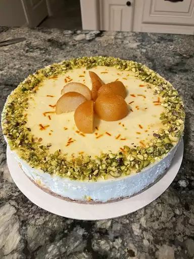

Cheesecake

Description
Looking for the best recipe for cheesecake on the internet? Well, you've found it!
This easy cheesecake (from Philadelphia, the iconic cream cheese brand) will find
a permanent home in your recipe box.
Ingredients
- Graham Cracker Crumbs
- Butter
- Sugar
- Cream Cheese
- Sour Cream
- Vanilla
- Eggs
- Pie Filling (Optional)
Steps
- Make the crust and press it into a springform pan.
- Make the filling, then pour it over the crust.
- Bake the cheesecake until the filling is almost set.
- Run a knife around the rim to loosen the sides and allow it to cool.
- Remove the cheesecake from the pan and chill before serving.